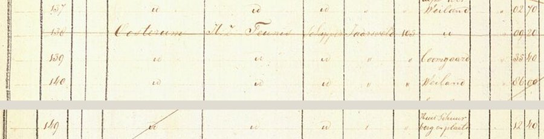
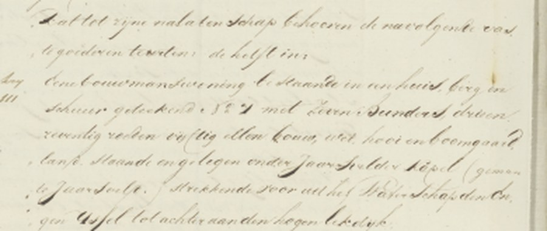
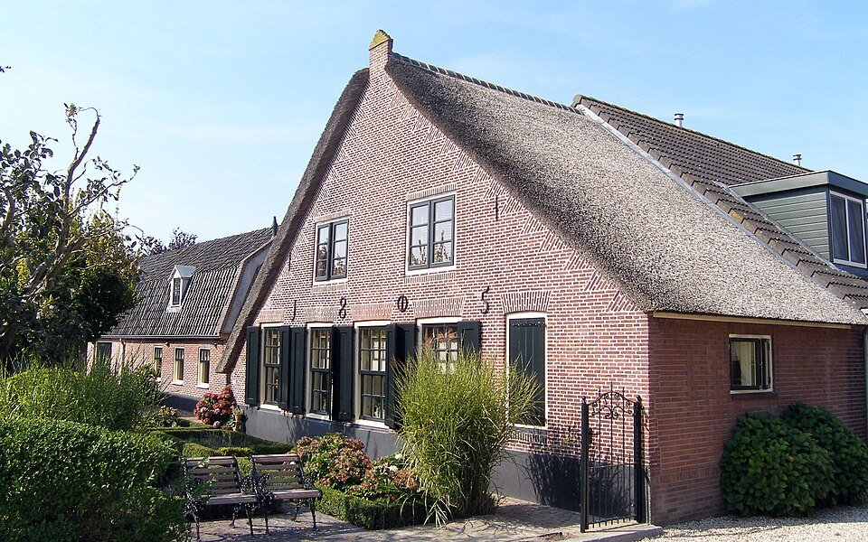

Waar de familie woonde, en waar ze gedoopt werden en trouwden. Bijna vijfhonderd jaar lang in een klein
gebied langs de Lek. Alle plaatsen staan ook op de kaart.
Dit is het eerste huis van de familie dat we precies kunnen aanwijzen. In 1832 maakte de overheid voor het eerst
een kadaster: een kaart van elk stuk grond in Nederland, met de naam van de eigenaar. In het register van Jaarsveld
staat bij de percelen 138 tot 157 van sectie A: Oosterum, H.Z. Teunis, schipper, Jaarsveld. Dat is Teunis
Huijbertszoon van Oostrum (1762–1830). Hij was in 1830 al overleden, maar het kadaster liep een paar jaar achter.

"138 – Oosterum – H.Z. Teunis – schipper – Jaarsveld – [artikel] 105." Daaronder steeds "id." (hetzelfde):
boomgaard, weiland. Onderaan, een paar regels verder, nummer 149: "huis, schuur, berg en plaats". Kadaster 1832,
Oorspronkelijk Aanwijzende Tafel Jaarsveld, sectie A, blad 5 (via HisGIS).
Perceel 149 is het erf met het huis, de schuur en een hooiberg. Het lag aan de Enge IJssel, het smalle
riviertje langs de weg van Lopikerkapel naar Jaarsveld. Vandaar liep het land in lange smalle stroken naar het
zuiden, tot aan de Lekdijk. Aan de overkant van de dijk had Teunis nog stukken hooiland in de uiterwaarden, tot in
de rivier.
De percelen van Teunis in 1832, getekend op een luchtfoto van nu. Rood: het erf met huis, schuur en
hooiberg (perceel 149), aan de Enge IJssel. Geel: zijn land, tot over de Lekdijk en in de uiterwaarden van de Lek
(rechtsonder). Perceelgrenzen 1832: HisGIS; luchtfoto:
Beeldmateriaal Nederland / PDOK, CC BY 4.0.
Na de dood van Teunis en Geertje, in augustus 1830, moesten hun kinderen aan de belastingdienst opgeven wat er
geërfd werd. Die memorie van successie beschrijft de boerderij:

"Dat tot zijne nalatenschap behooren de navolgende vaste goederen, te weten: de helft in: eene
bouwmanswoning, bestaande in een huis, berg en schuur, geteekend N° 7, met zeven bunders drie en zeventig roeden
vijftig ellen bouw-, wei-, hooi- en boomgaardland, staande en gelegen onder Jaarsvelderkapel, gemeente Jaarsveld,
strekkende voor uit het waterschap den Engen IJssel tot achter aan den hoogen Lekdijk." Memorie van successie,
kantoor IJsselstein, 10 november 1830 (Het Utrechts Archief 337-10, inv. 7, nr. 84).
Bij de boerderij hoorde 7,7 hectare land. Daarnaast bezat het echtpaar 1,4 hectare uiterwaard "tot in de diepte
van de Lek", nog 2,8 hectare uiterwaard verderop, en een tweede huis (nummer 9) met 2,1 hectare land in Lopik.
Samen zo'n 14 hectare. Teunis was dus niet alleen schipper, maar ook een boer met eigen grond.

De buurboerderij aan de overkant van de Enge IJssel, gebouwd in 1805 (het jaartal staat in de gevel).
Zo zagen de boerderijen er in de tijd van Teunis uit. Lopikerweg Oost 146, rijksmonument. Foto: China Crisis,
Wikimedia Commons, CC BY-SA 3.0.
Het erf ligt aan het huidige Kapelsepad in Lopikerkapel. Op het perceel zelf staan nu nieuwe huizen. Er
direct naast staat nog een oude bakstenen boerderij met een puntgevel. Of dat (een deel van) het huis van Teunis
is, weten we niet zeker: de kaart van 1832 is niet tot op de meter nauwkeurig over de kaart van nu gelegd.
Wie de boerderij vóór Teunis had, is nog niet uitgezocht. Zijn vader Huijbert woonde in 1771 "in Jaarsveld" en
werd in 1792 begraven als "onder Jaarsvelder Capel", dus in dezelfde buurt.
Bronnen: kadaster 1832 (OAT Jaarsveld, sectie A, artikel 105); memories van successie van Teunis
Oosterom en Geertje Dekker, IJsselstein 1830 (nr. 73 en 84).
Zuid-Polsbroek en Polsbroek
1830 – 1908 · Arie Oosterom en Elisabeth Kooiman; Teunis Oosterom en Adriana Cornelia Lekkerkerker
Een oude boerderij in Polsbroek, zoals de Oosteroms er een hadden. Foto: Jan Dijkstra,
Wikimedia Commons, publiek domein.
Arie, de zoon van Teunis, trouwde in juni 1830 in Willige Langerak. In de memorie van successie van november 1830
staat hij als "zonder beroep, te Willige Langerak", het dorp waar hij net getrouwd was. Daarna vestigde het
paar zich in Zuid-Polsbroek, waar Arie in 1835 bouwman (boer) is. Arie overleed in 1881 in huis nummer 57 in
Polsbroek. Zijn zoon Teunis woonde in 1875 in huis nummer 33.
Waar die huizen precies stonden, weten we nog niet. Na de dood van Elisabeth in 1893 werd haar bezit bij notaris
Cambier van Nooten in Lopik beschreven, geveild en verdeeld. Die akten verwijzen naar een aankoop uit 1839 bij een
notaris in Jutphaas: waarschijnlijk de boerderij. Ze liggen in het archief in Woerden en staan nog niet online.
Bronnen: geboorte- en overlijdensakten Zuid-Polsbroek en Polsbroek; notariële akten Lopik 1893
(RHC Rijnstreek en Lopikerwaard, L156 inv. 1184–1185).
Stolwijk, Bergambacht en Langerak
1909 – 1959 · Pieter Oosterom en Willempje Lekkerkerker
De kerk van Bergambacht. Foto: Sailko,
Wikimedia Commons, CC BY 3.0.
Pieter en Willempje vertrokken in januari 1909 met hun zoontje Arie uit Polsbroek. Ze woonden heel even in
Stolwijk en vestigden zich nog in hetzelfde jaar in Bergambacht, over de Lek in de Krimpenerwaard. In het
bevolkingsregister staat Pieter als landbouwer aan de Hogedijk (toen nummer 149). In april 1925 verhuisde het
gezin naar Langerak. Pieter overleed in 1959 in Bergambacht.
Bronnen: bevolkingsregisters Stolwijk 1906–1924 en Bergambacht 1893–1937 (Streekarchief
Midden-Holland).
Oudere plekken
Jaarsveld aan de Lek, ets van Jan van Almeloveen (eind 17e eeuw).
Statens Museum for Kunst, publiek domein.
Jaarsveld en het goed Oversloot. De Smetsers, de voorouders van de Oosteroms, woonden al in de 16e eeuw
bij Jaarsveld. Rond 1580 huurde Cornelis Ariensz Smetser het goed Oversloot in het gerecht Jaarsveld, van
jonkheer Carel Steur. Waar dat goed lag, zoeken we nog uit.
De Lek. Van Aryen Smetser (ca. 1540) tot Arie Oosterom (1801) waren de mannen van de familie schipper op
de rivier. Jan Ariensz heette zelfs "Jan Ariens Schipper".
Montfoort. Annetje van Oostrum Smetser (1622) trouwde in 1649 in Montfoort met Hendrick Jacobs Speyert,
burgemeester van het stadje.
Portengen en Ter Aa. Arie van Oostrum (1756–1841), een broer van Teunis, trok naar Portengen, ten noorden
van Utrecht. Van hem stammen de Van Oosteroms uit die streek af.
Bronnen: famkroon.nl; vanoostrum.info.
De kerken
Lopikerkapel
1622 – 1808 · dopen, trouwen en begraven
Lopikerkapel met het kerkje. Foto: Jan Dijkstra,
Wikimedia Commons, CC BY-SA 4.0.
Het kerkje stond nog geen kilometer van de boerderij aan de Enge IJssel. Bijna twee eeuwen lang werden de Van
Oostrums hier gedoopt, getrouwd en begraven. Jan Ariensz werd in 1753 in de kerk begraven, zijn zoon Huijbert in 1792
in een gehuurd graf. Voor Huijbert luidde twee uur lang de klok, die Gerhart Schimmel in 1682 goot en die er nog
hangt.
Er stond al in 1327 een kapel. Rond 1450 werd de kerk opnieuw gebouwd; vanaf 1605 was ze protestants. Tussen 1828
en 1832 werd ze gerestaureerd door aannemer Roeloff Benschop, waarschijnlijk een kleinzoon van Huijbert.
Bronnen: Wikipedia, Hervormde kerk (Lopikerkapel); doop-, trouw- en begraafboeken Lopikerkapel.
Willige Langerak
1830 · de bruiloft van de laatste schipper
De kerk van Willige Langerak in 1840. Foto: Gerard Dukker,
RCE / Wikimedia Commons, CC BY-SA 4.0.
Hier trouwde schipper Arie Oosterom in juni 1830 met Elisabeth Kooiman, dochter van een boer. Twee maanden later
stierven zijn ouders.